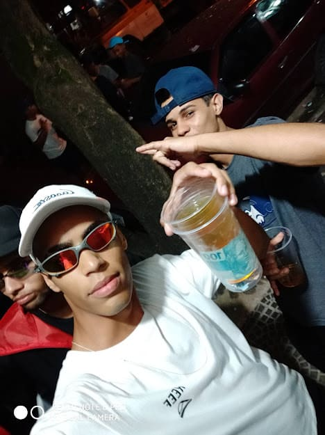
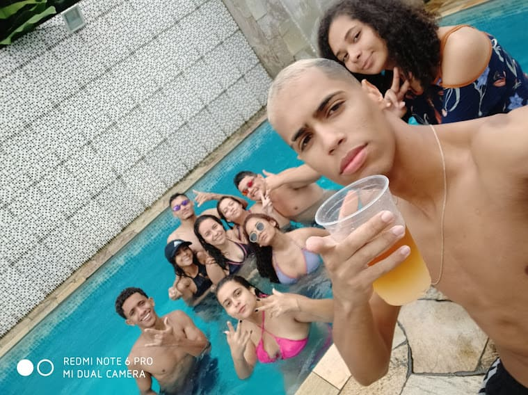
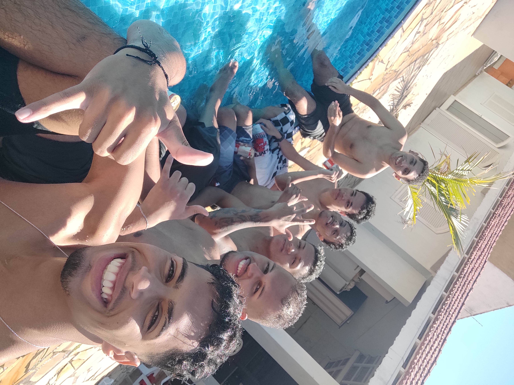
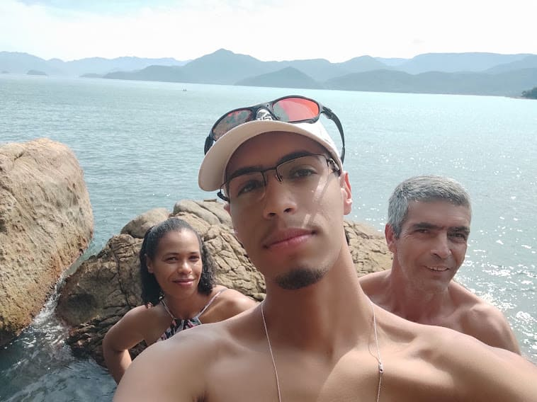
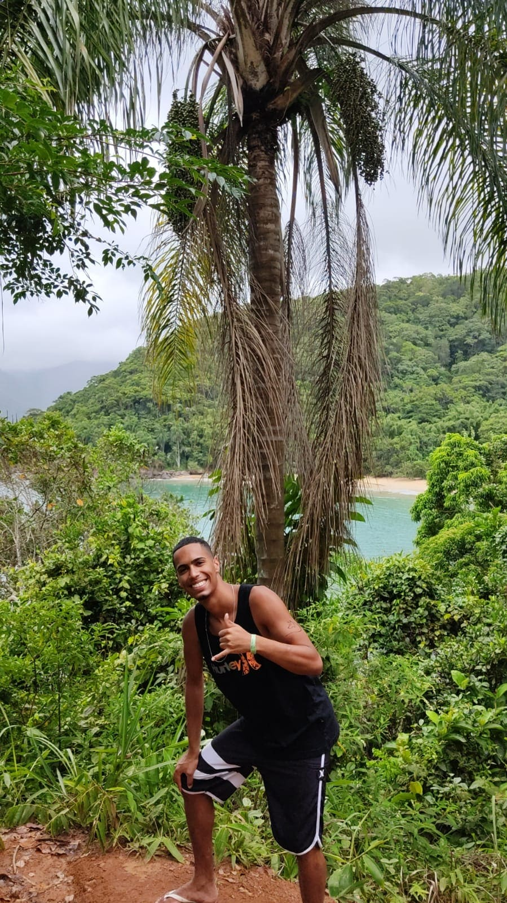
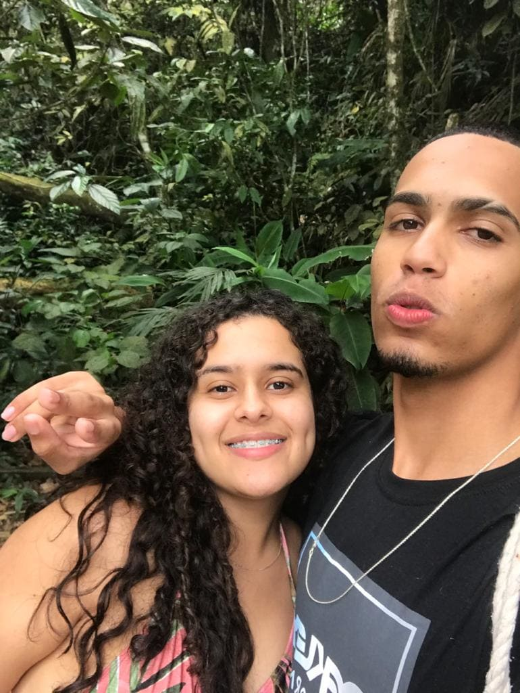

#Rolezeiro
Natal de 2019, Que dia f*da, Fui parar em um baile top de SP... o resto é história.


Um dos melhores rolês que eu já fiz,foi no começo de 2020,alugamos uma casa na praia e demos uma festança, todo mundo foi ver o nascer do sol na areia. A vibe desse dia foi boa demais (MDS Eu tava loiro KKKKKKKK 🤓)
Como o rolê anterior tinha dado muito certo, nada mais justo que um replay, depois de passar todo esse caos em meio a pandemia e ficarmos muito tempo em quarentena e evitando aglomerações (foi meio que um marco.)reencontrar o pessoal e conhecer pessoas novas, foi sensacional.

#Natureza

Meus coroas, O motivo pelo qual eu tenho forças pra abater o leão nosso de cada dia. É por eles que eu luto e me empenho em dar o meu melhor sempre. Nesse dia fomos pra uma praia maravilhosa em Ubatuba.
Uma trilhazinha de leves; namoral é muito bom andar em meio a natureza, sem barulhos de carros, ônibus, trem. Só o vento soprando nas árvores e o canto dos pássaros, isso revigora qualquer um quando você precisa se desconectar um pouco.


Eu e a minha gata. A gente estava comemorando nosso primeiro ano de namoro. E fizemos uma viajem maravilhosa.(De quebra tiramo logo uma selfie no meio dos "mato".)